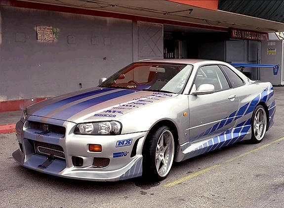
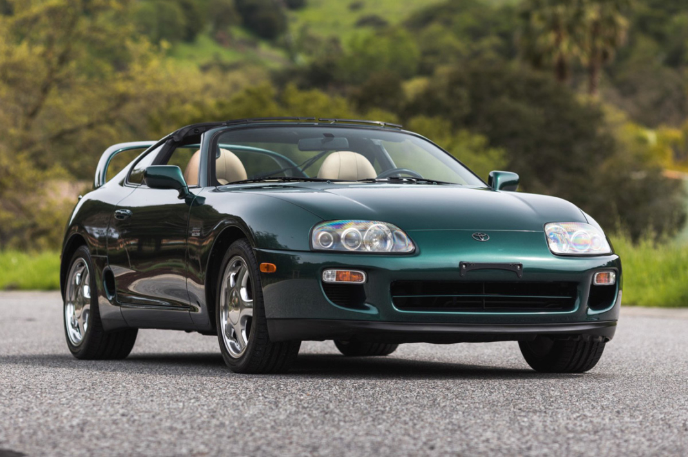
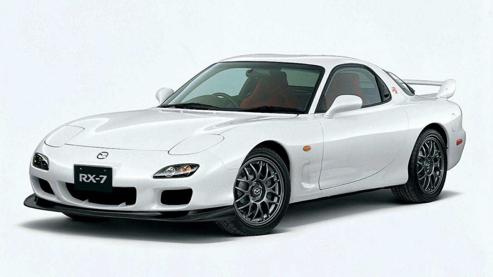

¿Qué es JDM?
El veloz murciélago hindú comía feliz cardillo y kiwi. La cigüeña tocaba el saxofón detrás del palenque de paja. El veloz murciélago hindú comía feliz cardillo y kiwi. La cigüeña tocaba el saxofón detrás del palenque de paja. El veloz murciélago hindú comía feliz cardillo y kiwi. La cigüeña tocaba el saxofón detrás del palenque de paja. El veloz murciélago hindú comía feliz cardillo y kiwi. La cigüeña tocaba el saxofón detrás del palenque de paja.
Historia del JDM
Modelos Icónicos de JDM
| Modelo | Año | Motor | Imagen |
|---|---|---|---|
| Nissan Skyline GT-R | 1999 | RB26DETT |  |
| Toyota Supra | 1993 | 2JZ-GTE |  |
| Mazda RX-7 | 1992 | 13B-REW |  |